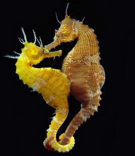

Il cavalluccio marino
Tutti i pesci del genere Hippocampus presentano le identiche caratteristiche fisiche e si distinguono dai vari pesci. La struttura fisica è incentrata su un asse verticale anziché orizzontale, quindi i cavallucci marini hanno posizione eretta, anche se durante il nuoto assumono una posizione più idrodinamica, avanzata. Un collo arcuato posiziona la testa in avanti, dalla caratteristica forma equina e con un muso allungato e tubolare. Le pinne pettorali (se presenti) sono posizionate come sempre dopo le aperture branchiali, ma la particolare forma fisica le fa somigliare più a delle orecchie equine. Il dorso è poco pronunciato, con una pinna dorsale mentre il profilo ventrale è particolarmente arcuato. La pinna caudale in realtà è un prolungamento del corpo, è mobile e prensile, usata come arto e come sostegno. Durante il nuoto spesso è arrotolata su sé stessa. L'intero corpo è rafforzato da una corazza ossea, in molte specie arricchita da spigoli e aculei che rendono il cavalluccio marino una preda poco appetitosa. Caratteristici sono degli spigoli sopraoculari e una corona ossea intorno alla testa. In molte specie la struttura della corazza ossea accentua il già elevato mimetismo della colorazione. La livrea varia per ogni specie. Le dimensioni variano da specie a specie.
La femmina depone le uova in una speciale sacca incubatrice nel ventre del maschio, situata vicino all'apertura anale. Alla schiusa, il maschio espelle gli avannotti con delle contrazioni addominali simili al parto femminile, evento piuttosto insolito in natura, chiamato gravidanza maschile.
I cavallucci marini si trovano in tutte le acque del mondo tranne quelle glaciali, prevalentemente in prossimità delle coste dove trovano rifugio e sostegni dove potersi ancorare durante i movimenti con la lunga coda prensile. Sono particolarmente diffusi nelle barriere coralline e nelle praterie di fanerogame marine come la Posidonia oceanica.